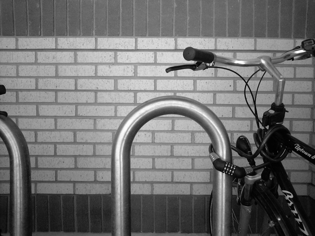
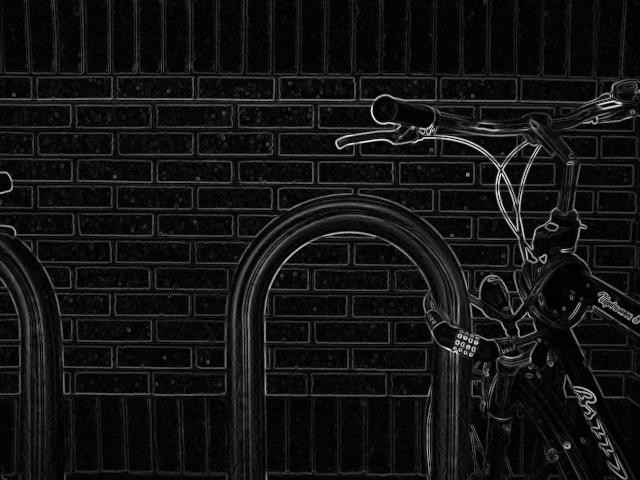
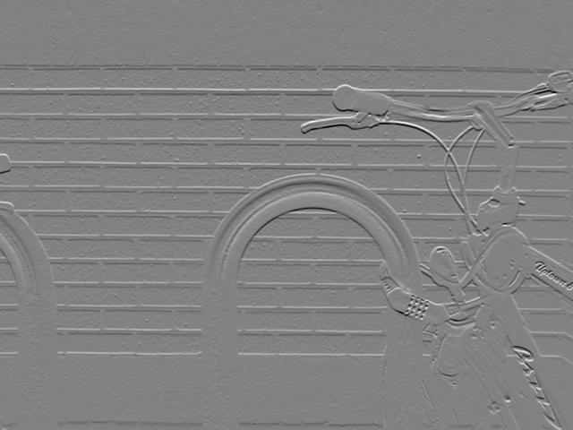
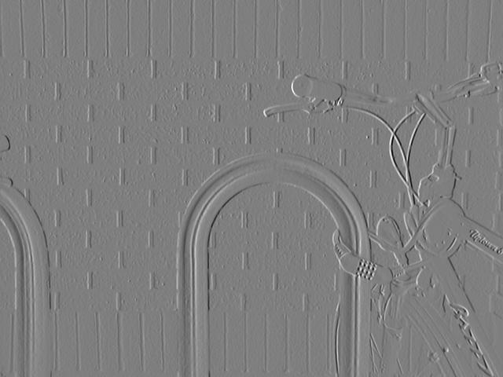

Ermoupoli, 2 July 20206
We have covered:
Representations
The lens camera, stereoscopy
Moving on to:
Optical flow and pose estimation
Further relevant sensors: IMU, GPS
Sensor fusion
3D map construction.
We don’t really need the two cameras, what we really needed was a way to create a measurable disparity.
What if we had a moving camera?
Then in consequtive frames we can match features and measure \(d\)
Optical Flow is the apparent motion of brightness patterns between frames.
Brightness, not full colour, because full colour is more fragile and can appear different for too many reasons
Patterns, not individual points, because even 3D RGB pixels are not distinctive enough, and scalar brightness pixles even more so
Assumptions:
High framerate: The sampling is dense enough to minimize features coming into/falling out of the FOV, and to have small distances for most features between frames
Brightness constancy: A feature maintains its brightness between frames
Rigidness: Most features move like their neighbours, as they make up a rigid body
The smaller the movement between frames, they more stable the results
Some features will appear or disappear, but generally few
Any modern camera will satisfy this for any reasonable feature speed
Where is the catch?
How quickly can the on-board computer process a frame pair, while also navigating and performing all this various tasks?
Low processing power approaches will be discussed tomorrow.
Constancy is easier to satisfy in brightness space than in RGB space
Moving light sources can be a problem, but in your outdoors environment the sun drowns out any other light source and has no perceivable motion between frames
To be trully frugal with the CPU, bear in mind that spatial gradients along edges matter, not the accurate representation of the (non-linear) human perception of brightness. ITU Recommendation BT.601-7 has low-CPU definition that works well: \(I = 0.299 R + 0.587 G + 0.114 R\)
Where is the catch?
It is the nature of feature recognition algorithms to look for corners and similar characteristic pixel clusters that naturally belong to the same object
Non-rigid objects also have corners, but they are generally few.
Where is the catch?
Wave foam gives features, so have that in mind if it is windy
The Sorbel-Feldman operator detects edges
The Shi-Tomasi score rates corners for their stability
Solving the Optical Flow Equation finds the velocity vector (in pixels) that best explains the change
From the velocity vector and the framerate we compute disparity \(d\) and plug it into the equation we saw earlier
Images are discrete objects, not directly differentiable
The Sorbel-Feldman is a computationally efficient approximation of the intensity gradients over 3×3 kernels, formulated as integer matmul operations
The result is for each pixel, the gradient in each direction




Attribution: https://en.wikipedia.org/wiki/Sobel_operator
Now we have edges, we will push on to find corners
Corners are more stable and more efficient drivers of optical flow
all patches along an edge will look similar, will be near each other, and will be rigid
too many candidates to match, too similat to each other
Corners are just where two edges meet, but:
the Sorbel-Feldman gradients are along the W-H axes, not along the edges
we have no reason to believe the world will be nicely aligned to the W-H axes of the image
\[ \text{Structure Tensor } A = \begin{bmatrix} \left< I_x^2 \right> & \left< I_x I_y \right> \\ \left< I_x I_y \right> & \left< I_y^2 \right> \\ \end{bmatrix} \]
where \(\left<\cdot\right>\) is the Gaussian or other aggregation over the local area.
The Structure Tensor gives us the distribution of gradients in the area.
If both eigenvalues are relatively large, we have a corner; if only one is large, we have an edge; if neither we are at a flat surface.
To avoid calculating the eigenvalues, various metrics are used.
For example:
\[ M_c = 2 \frac{\det(A)}{\text{trace}(A)+0.001} = 2 \frac{\lambda_1\lambda_2}{\lambda_1+\lambda_2+0.001} \]
will be a larger number if both \(\lambda_1,\lambda_2\) are large and is a much more efficient computation than calculating the eigenvalues just to compare them.
Optical flow is an old concept, stemming from WWII-time research on pilot vision during landing.
When used to express the brightness constancy assumption, it gives us the following mathematical formulation:
\[ \text{I}(p,t_0) - \text{I}(p+d,t_1) = 0 \]
where \(p\) is a point in pixel coordinates and \(d\) is the displacement in pixels of this point between time \(t_0\) and time \(t_1\)
Obviously we cannot solve this equation for \(d\) as there will not be a unique value for \(d\) that satisfies it.
The Lucas-Kanade methods adds the rigidness assumption in the form of a region around the pixel of interest with the same \(d\).
We now have a system of equations:
\[ \begin{matrix} \text{I}(p_0,t_0) - \text{I}(p_0+d,t_1) = 0 \\ \text{I}(p_1,t_0) - \text{I}(p_1+d,t_1) = 0 \\ \text{I}(p_2,t_0) - \text{I}(p_2+d,t_1) = 0 \\ ... \end{matrix} \]
If we add a sufficient number of equations we will go from “too many solutions” to “no solution”
This is a happy problem, becase we know how to solve it: We will use an optimizer to find the value of \(d\) that minimizes the aggregated residue
Our most efficient optimizers are linear optimizers, so if we can express \(\text{I}(p,t)\) as a linear function we are all set
\[ f(x) = \sum_{n=0}^{\infty} \frac{f^{(n)}(a)}{n!} (x-a)^n \]
We will only keep the first derivative, so that we have a linear function
Under our high framerate assumption, this will be a good enough approximation
Note
We are effectively imposing inertia on the motion
After differentiation, our system of equations is now:
\[ \begin{matrix} \text{I}_x(p_0) \text{d}_x + \text{I}_y(p_0) \text{d}_y + \text{I}_t(p_0) = 0 \\ \text{I}_x(p_1) \text{d}_x + \text{I}_y(p_1) \text{d}_y + \text{I}_t(p_1) = 0 \\ \text{I}_x(p_2) \text{d}_x + \text{I}_y(p_2) \text{d}_y + \text{I}_t(p_2) = 0 \\ ... \end{matrix} \]
These are the theoretical, underlying functions that we sample when we use a camera.
We apply Sorbet-Feldman to calculate numerical values for the partial derivatives of \(\text{I}\) at specific pixels \(p_0, p_1,...\)
So now we have a linear system of equations similar to
\[ \begin{matrix} 5 d_x - 13 d_y + 988 = 0 \\ 2 d_x - 9 d_y + 1973 = 0 \\ 2 d_x + 7 d_y + 2026 = 0 \\ ... \end{matrix} \]
This will normally have no solution, but we can use a linear optimizer to find the values of \(d_x, d_y\) that minimize residue.
We multiply by \(\Delta t\) to get the disparity (d) in pixels needed to calculate depth using \(D = f_x\frac{B}{d}\)
Instead of solving a 2×2 system of equations, we put together a system with more equations than variables, ensuring that it cannot be solved, and used an optimizer to find a good enough solution
This approach gives stability in the face of the assumptions mostly (as opposed to completely) holding
We have assumed linear, inertial, motion. If this creates systematic error that makes all equation give wrong results, we are doomed and no optimization trick can save us
Note
Maybe the class can hypothesise about when this might happen?
Is it worth shaving off a few nanoseconds here and there at the expense of accuracy?is worth
The pipeline above gives the depth for one pixel; at 1024×768 and 1 FPS gaining 10nsec per frame is 0.8% of your CPU
Your CPU is pretty weak, 10 nsec is conservative. Experiment to see the impact of each optimization.
Your CPU has many jobs to execute. 0.8% of the CPU is not negligible, and 1FPS is too sparse
Remember our assumptions and the linearization discussion? Being able to operate at higher framerates can have huge impact, a lot bigger than full, high-accuracy computations
We have covered:
Representations
The lens camera, stereoscopy
Optical flow and pose estimation
Moving on to:
Further relevant sensors: IMU, GPS
Sensor fusion
3D map construction.
The 9-DOF IMU:
Accelerometer: 3D acceleration
Gyroscope: 3D angular velosity
Magnetometer: 3D magnetic force field
Pitch, roll, and yaw and their rate of change are calculated from the 9-DOF IMU
Note
Note how all three sensors measure forces, which makes sense.
The GPS gives geolocation
Can be converted to a metric space via a projection
Use UTM Zone 35N, although Syros almost on the fence between 34N and 35N
GPS can have a few meters of error, but the error does not accumulate
IMU starts out very accurate, but drifts over time
Optical Flow accuracy can vary wildly; Optical Flow is differencial similarly to IMU, so its error accumulates.
It makes sense to fuse the different measurements in a way that exploits their respective strengths
Any aggregation function, (weighted) mean, max, min, can be considered fusion but the Kalman Filter excels in fusing a low-accuracy non-drifting measurement with a drifting measurement
The KF is only applicable to lieanr systems, the Extended Kalman Filter (EKF) is a linearization that extends the filter’s applicability to systems that can locally linearly approximated
(More than 17 slides dense with maths later)
So the key intuition is:
The filter keeps track of a system’s state (here, pose) under uncertainty
The filter receives multiple new observations (here, pose from different methods) that have independent error (do not err in the same direction)
The filter applies statistical and control theory wizardly to:
behave as a stabilizer by giving ‘inertia’ to the previous state
behave as a smoothener by maintaing a statistical representation of the values in the state vector
Data from trials last April,
We have so far only discussed pose estimation. Where is the map?
In IMU/GPS localization there is no environmental observations, the vehicle is either geolocalized or localized wrt. its previous pose
Optical flow has the advantage that localization is a by-product of depth estimation: the vehicle is localized wrt. objects in the environment
Not only optical flow, but all range-finding sensors (lidar, radar)
Optical flow is more interesting, because range information is not inherent to the sensor but takes some effort to extract
For all range-finding localizers, the map is the point-cloud that is constructed by stitching together the depth images
Using the vehicle pose to rotate/translate them to a global origin
A fully constructed map will make subsequent localization more accurate
Interactive map constructed from the April tests data